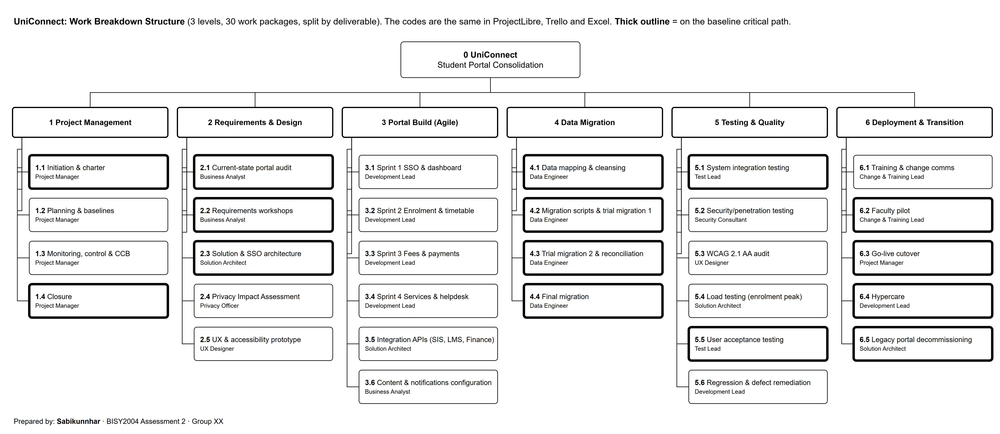
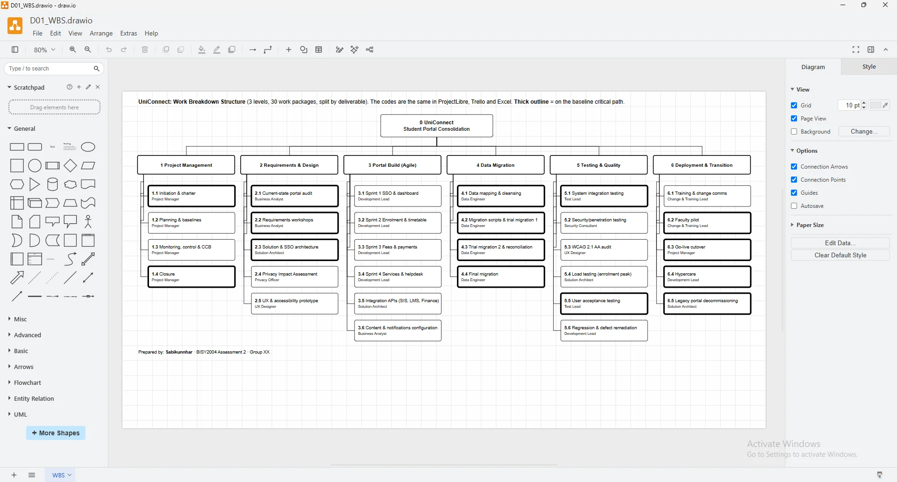

Scope and WBS
What we are (and aren't) delivering, split into the 30 work packages we use in every tool.
Scope statement
Consolidate the Enrolment, Fees & Payments, LMS gateway and Student Services portals into one responsive web portal with SSO + MFA, integrate with the SIS, LMS and Finance systems, migrate and cleanse student portal data, train users, run a faculty pilot, cut over before Semester 1 2027 and decommission the legacy portals.
In scope
- Portal features: dashboard, enrolment & timetable, fees & payments, services & helpdesk
- SSO + MFA using the existing identity platform
- Integration APIs to SIS, LMS and Finance
- Data mapping, cleansing and migration of student portal data (2 trials + final)
- SIT, security/penetration testing, WCAG 2.1 AA audit, load testing, UAT
- Training, change communications, faculty pilot, cutover, 4-week hypercare
- Decommissioning of the three legacy portals
Out of scope
- Replacing the Student Information System (SIS) or the LMS itself
- Native mobile apps and push notifications (deferred to Phase 2: CR-01)
- Staff/HR portals
- Historical alumni records older than 7 years
Deliverables
- Project charter and project management plan with baselines
- Requirements specification, solution & SSO architecture, Privacy Impact Assessment
- Tested portal release with four feature sets and integration APIs
- Reconciled migrated data set and migration reports
- Test completion reports (SIT, security, accessibility, load, UAT)
- Training materials, pilot report, cutover runbook, hypercare report
- Closure report with lessons learned and benefits realisation plan
Acceptance criteria
- Migration reconciliation ≥ 99.5% signed off by the Registrar
- UAT pass rate ≥ 95% and 0 open Severity-1 defects
- WCAG 2.1 AA audit with 0 critical failures
- Load test p95 < 2 s at 5,000 concurrent users
- Privacy Officer sign-off on the PIA and migration controls
Work breakdown structure




WBS dictionary
Show all 30 work packages
| WBS | Work package | Deliverable | Owner | Description |
|---|---|---|---|---|
| 1.1 | Initiation & charter | Approved project charter | Project Manager | Business case review, charter, stakeholder identification; ends at M1. |
| 1.2 | Planning & baselines | PM plan; scope, schedule and cost baselines | Project Manager | WBS, ProjectLibre schedule, cost baseline, risk register, comms plan, RACI. |
| 1.3 | Monitoring, control & CCB | Weekly status reports, EVM, CCB minutes | Project Manager | Level-of-effort task from end of planning to end of hypercare. |
| 1.4 | Closure | Closure report and lessons learned | Project Manager | Admin closure, contract closure, archive, benefits handover; ends at M7. |
| 2.1 | Current-state portal audit | Current-state audit and data profile | Business Analyst | Inventory of the four portals, features, data stores, pain points and early data profiling (R01). |
| 2.2 | Requirements workshops | Prioritised requirements (MoSCoW) and product backlog | Business Analyst | Workshops with students, SRC, faculties, Registrar and Service Desk. |
| 2.3 | Solution & SSO architecture | Solution architecture and SSO design | Solution Architect | Target architecture, SSO/MFA design on the existing identity platform (R12), integration patterns. |
| 2.4 | Privacy Impact Assessment | Approved PIA | Privacy Officer | APP-based PIA covering migration, masking, access logging and retention (R03). |
| 2.5 | UX & accessibility prototype | Clickable prototype and accessible design system | UX Designer | Tested with students incl. Accessibility Services; WCAG 2.1 AA patterns (R08). |
| 3.1 | Sprint 1 SSO & dashboard | SSO login and student dashboard increment | Development Lead | Two-week sprint; SSO proof of concept retires R02/R12 uncertainty. |
| 3.2 | Sprint 2 Enrolment & timetable | Enrolment & timetable increment | Development Lead | Two-week sprint; enrolment forms, timetable view. |
| 3.3 | Sprint 3 Fees & payments | Fees & payments increment | Development Lead | Two-week sprint; invoices, payment gateway hand-off, Finance integration. |
| 3.4 | Sprint 4 Services & helpdesk | Services & helpdesk increment | Development Lead | Two-week sprint; service requests, knowledge base, chatbot hand-off. |
| 3.5 | Integration APIs (SIS, LMS, Finance) | Tested integration APIs | Solution Architect | SIS, LMS and Finance APIs used by the portal and by trial migration 2 reconciliation. |
| 3.6 | Content & notifications configuration | Configured content, templates and email notifications | Business Analyst | Portal content, FAQs and email notification templates (push notifications excluded: CR-01). |
| 4.1 | Data mapping & cleansing | Source-to-target mapping and cleansing rules | Data Engineer | Mapping of four portal data stores to the target model; de-duplication rules (R01). |
| 4.2 | Migration scripts & trial migration 1 | Migration scripts and trial 1 report | Data Engineer | Scripts built and first full trial run on masked data; ISS-01 raised here. |
| 4.3 | Trial migration 2 & reconciliation | Trial 2 reconciliation report (≥ 99.5%) | Data Engineer | Second trial using the integration APIs; Registrar signs reconciliation; ends at M4. |
| 4.4 | Final migration | Production data load and sign-off | Data Engineer | Final production migration in the cutover window. |
| 5.1 | System integration testing | SIT completion report | Test Lead | End-to-end tests across portal, SIS, LMS, Finance and migrated data. |
| 5.2 | Security/penetration testing | Pen-test report and remediation | Security Consultant | External pen-test engagement ($25k fixed) + remediation verification. |
| 5.3 | WCAG 2.1 AA audit | Accessibility audit report | UX Designer | Finishes 5 days after Sprint 4 (FF+5d link). |
| 5.4 | Load testing (enrolment peak) | Load test report (5,000 concurrent users) | Solution Architect | Starts 5 days after SIT starts (SS+5d link). |
| 5.5 | User acceptance testing | UAT sign-off | Test Lead | Students, Registrar and faculty staff execute UAT scripts; ends at M5. |
| 5.6 | Regression & defect remediation | Regression pack results; Sev-1/2 defects closed | Development Lead | Runs alongside UAT (SS+5d). |
| 6.1 | Training & change comms | Training materials, comms campaign | Change & Training Lead | Student guides, staff/Service Desk training, go-live comms ($8k materials). |
| 6.2 | Faculty pilot | Pilot report and go/no-go input | Change & Training Lead | Pilot with two faculties' summer-session students and staff. |
| 6.3 | Go-live cutover | Production go-live | Project Manager | Cutover runbook, production licences activated ($180k); ends at M6. |
| 6.4 | Hypercare | Hypercare report | Development Lead | Four weeks of heightened support, daily stand-ups with the Service Desk. |
| 6.5 | Legacy portal decommissioning | Decommissioned legacy portals, archived data | Solution Architect | Retire three legacy portals and archive data per retention schedule. |
Interpretation
We split the WBS by deliverable, so every package has one owner and something you can actually test. Most of the critical path goes through data migration (4.x) and testing (5.x), so we keep scope there really tight. Any change has to get through the CCB before the WBS, schedule or budget moves (Schwalbe, 2019).
Links to other pages
- Schedule: every package is a ProjectLibre task with the same code
- Trello: one card per package, named [WBS] name
- Change control: how scope changes get approved
What we decided
Scope is stable: one change got pushed back and one fitted in. Push notifications stay out until Phase 2.